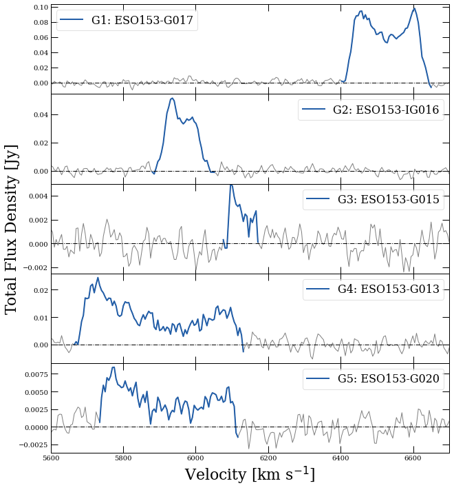

Using Astronify to sonify galaxy data
-
Astronify is a great tool to make data accessible to people with impaired vision. We are using Astronify to build a small project within a Jupyter Notebook to sonify examples of Atomic Hydrogen spectrum - for an individual galaxy and for a galaxy group - and here it is :)
The entire Jupyter Notebook and the data are accessible here
Project overview
Without going into too many details, we can say that a galaxy is composed out of stars, dust, gas and dark matter. The gaseous component in spiral galaxies is most often the Atomic Hydrogen (HI). This gas represents galaxy's reservoir from which it can form new stars in the future. The overall shape of 21 cm spectral line indicates motion and distribution of the gas, and the width of the line represents Doppler broadening (check Doppler effect due to the rotation of the galaxy. Therefore, we can roughly say that we are observing how gas in the galaxy rotates (ignoring e.g. projection effects due to inclination)! Moreover, we will also show here not just how it looks like, but also, how we can hear it!Play Sound below images :)
Example for galaxy ESO153-G017

Code that sonified the data looks like this
# Astronify import from astronify.series import SoniSeries from astropy.table import Table # General import import numpy as np import matplotlib.pyplot as plt # Galaxy data G1_channel, G1_velocity, G1_flux = np.loadtxt('g1', unpack=True) # Placing data into input Table # We will place our Velocity information as a 'time' input data_table = Table({"time": G1_velocity[(G1_velocity>6320) & (G1_velocity<6710)], "flux": G1_flux[(G1_velocity>6320) & (G1_velocity<6710)]}) # Sonify the data soni_obj = SoniSeries(data_table) soni_obj.note_spacing = 0.07 # Speed of the played sound, increase number to slow it down soni_obj.sonify() # Play soni_obj.play()
Example for galaxy ESO153-IG016 - Assymetric profile
We can sonify Atomic Hydrogen spectra for each detected galaxy in the group
In this example, we are sonifying the galaxy group `HIPASS J0205-55` and its sub-groups. Mapping this group with the Australia Telescope Compact Array, we found Atomic Hydrogen emission in 5 galaxies.
JUST WOW!
We notice (HEAR!) that the signal from the galaxies does not appear at the same time - that is because every galaxy is at a different distance in a group. In other words, the point where the signal from the galaxy appears is both visualised and sonified!At first, we can hear two galaxies (G4 and G5) rougly at the same time. Next, as the sound progresses we hear one high pitch noise - signaling a new galaxy (G2) and then yet another high-pitch signal - another galaxy (G3)! We can then hear the background noise for a bit, as the next galaxy is a bit further away. Finally we get to hear the highest-pitch sound which comes from the galaxy G! in the plot.
As you probably noticed, noise has a low-pitch sound, and with the increase of the Atomic Hydrogen Flux in a galaxy (within this galaxy group), galaxy will produce a higher-pitch tone.
Animation example
We can also combine visual and sound properties and make an animation like this:Code that generated animation
# Astronify import from astronify.series import SoniSeries from astropy.table import Table # General import import numpy as np import matplotlib.pyplot as plt #from matplotlib.animation import FuncAnimation import matplotlib.animation as animation %matplotlib notebook #Galaxy data G1_channel, G1_velocity, G1_flux = np.loadtxt('g1', unpack=True) duration = 7000 # in sec refreshPeriod = 100 # in ms fig,ax = plt.subplots(figsize=(6,6)) plt.plot(G1_velocity[(G1_velocity>6320) & (G1_velocity<6710)], G1_flux[(G1_velocity>6320) & (G1_velocity<6710)], 'grey', linewidth=8, label='ESO153-G017') # Spectrum where Atomic Hydrogen emission is ax.plot(G1_velocity[(G1_velocity>6320) & (G1_velocity<6525)],G1_flux[(G1_velocity>6320) & (G1_velocity<6525)], 'b-', color='blue', linewidth=2, label='') ax.plot(G1_velocity[(G1_velocity>6525) & (G1_velocity<7525)],G1_flux[(G1_velocity>6525) & (G1_velocity<7525)], 'b-', color='red', linewidth=2, label='') plt.ylabel("Total Fulx Density [Jy]", fontsize=22) plt.xlabel("Velocity [km s$^{-1}$]", fontsize = 22) plt.tight_layout() plt.xlim(6320,6710) plt.ylim(-0.008, 0.12) # Line Animation vl = ax.axvline(6320, ls='-', color='k', lw=3, zorder=10) def animate(i, vl, period): t = i*period/14 vl.set_xdata([t+6320,t+6320]) return vl ani = animation.FuncAnimation(fig, animate, frames=int(duration/(refreshPeriod/1)), fargs=(vl,refreshPeriod), interval=refreshPeriod) plt.show() # SOUND # Placing data into input Table # We will place our Velocity information as a 'time' input data_table = Table({"time": G1_velocity[(G1_velocity>6320) & (G1_velocity<6710)], "flux": G1_flux[(G1_velocity>6320) & (G1_velocity<6710)]}) # Sonify the data soni_obj = SoniSeries(data_table) soni_obj.note_spacing = 0.07 # Speed of the played sound, increase number to slow it down soni_obj.sonify() # Play soni_obj.play() # If you want to save it, uncomment the line below, it will save `Galaxy.mp3` file into your working directory #soni_obj.write('Galaxy.mp3')